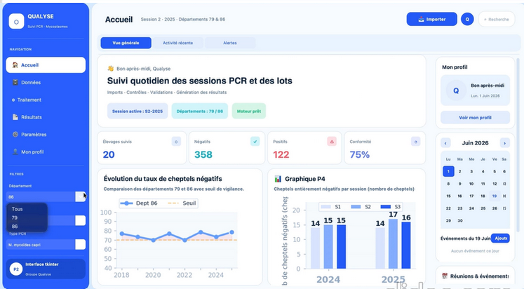
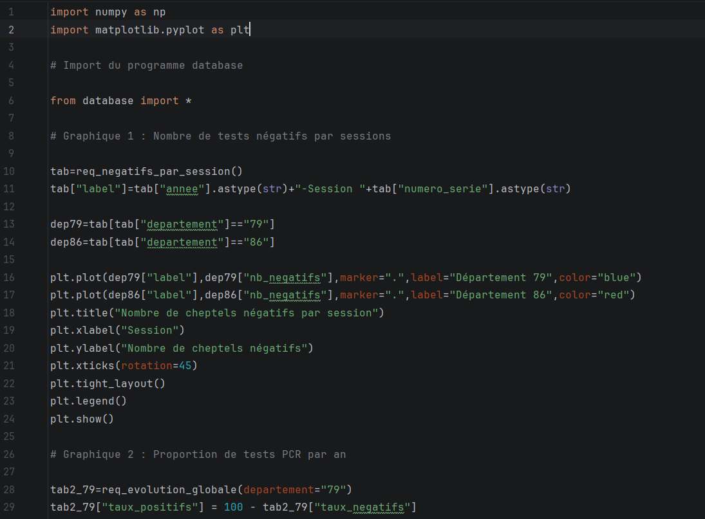
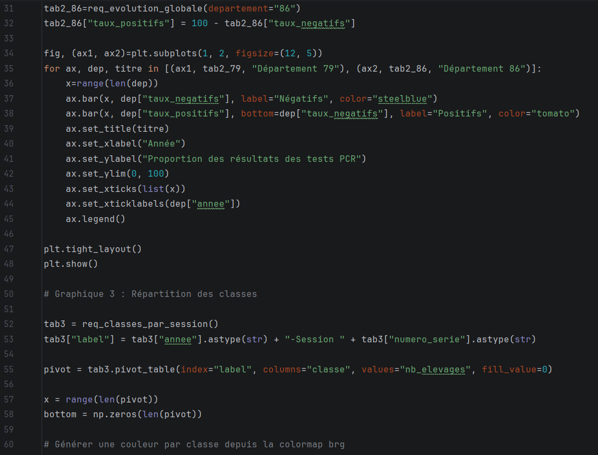
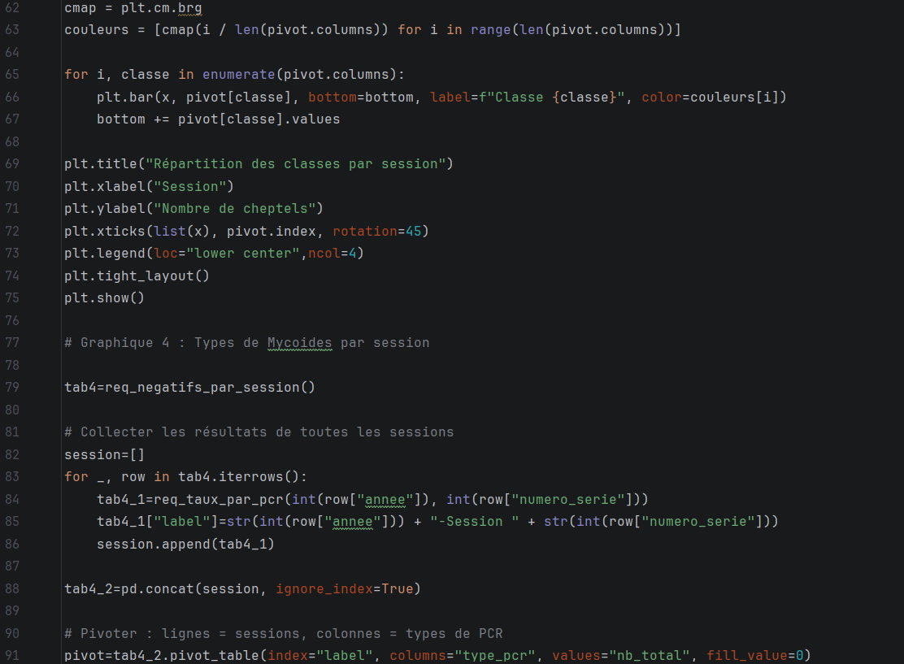
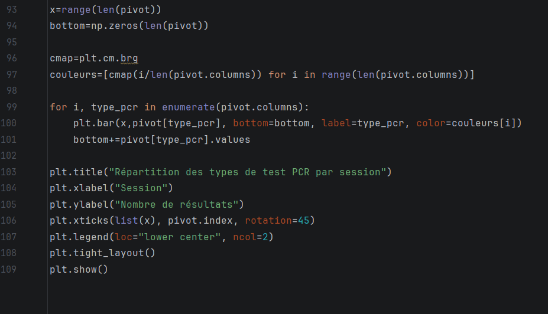

Cette SAÉ est celle qui se rapproche le plus d'une situation professionnelle, car elle répond directement aux demandes d'un commanditaire, en l'occurrence un laboratoire. L'objectif était de proposer au client une application recensant l'ensemble des données recueillies (tests PCR de cheptels de chèvres en Deux-Sèvres et dans la Vienne).
Avec Alban PERCHE, Syr Oscar MAKOSSO LUEYI, Airy Markel TAGNE KAMMEGNE et Tiphaine DUCRET, nous avions chacun un rôle précis pour ce travail, réalisé selon la méthode SCRUM, une méthode de travail basée sur l'adaptation et la répartition des tâches sur des périodes appelées « Sprint ». Mon rôle consistait en la réalisation de graphiques afin de simplifier la visualisation et la compréhension des résultats des tests PCR, tout en essayant de déterminer si des liens pouvaient être établis selon certaines modalités.
Le rendu final comprenait l'application (réalisée en Python avec customtkinter), un rapport global présentant le travail et des statistiques répondant à des questions posées au préalable, un rapport personnel de chaque membre du groupe, une vidéo de présentation de l'application, les différents codes ainsi que la base de données et le diaporama utilisé lors de l'oral (réalisé en anglais).